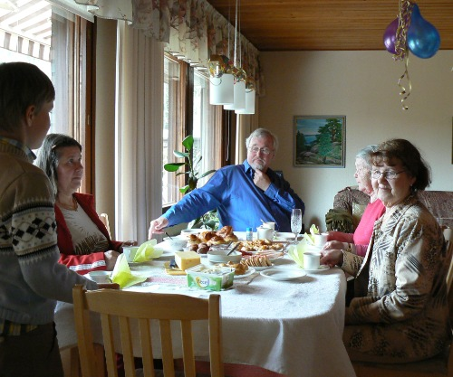

Toukokuu 2008 |
Lämmin vappuVappua vietettiin poikkeuksellisen kauniissa ja lämpimässä säässä. Se tietysti näkyi kaupungilla juhlijoiden, roskaamisen ja hulinoinnin määrässä. Me pysyttelimme kaukana siitä humusta. Sen sijaan tarjosimme vappubrunssin mummille, Sirkalle ja Weguille. Nautimme kuohuviiniä, makkaroita, munakokkelia ja kylmäsavulohta. Iltapäivällä nautimme miellyttävästä kevätsäästä ja saattelimme vieraat bussipysäkille. Kevät puhkesi viikossaKoko talvi oli poikkeuksellinen, koska varsinaista talvea ei tullut lainkaan. Niinpä kevätkin puhkesi paitsi aikaisin, niin myös tavattoman nopeasti. Muutamassa päivässä puissa oli jo isot lehdet ja kaikkialla oli vihreätä. Kukat alkoivat kukkia ja sini- sekä valkovuokot olivat jo kukkineet parhaan kukintasa enne äitienpäivää. Vaikutti siltä, että kasvien kukinta oli tänä keväänä poikkeuksellisen runsasta. Omenapuut olivat aivan upeita. Tuomi tuoksui ja pensaat kukkivat. Yöt olivat tosin kylmiä ja siksi mehiläisiä ja muita pölyttäjiä näkyi varsin vähän. PISA SuomenlinnassaElisan insinöörikerhon lopettamisen jälkeen elämään jäänyt "PI:n seniroialokkaat - PISA" kokoontui Suomenlinnan upseerikerholla. Puolen tusinaa äijää oli paikalla. Ensin saunottiin kerhon saunassa ja sitten siirryttiin syömään. Ilta oli leppoisan aurinkoinen ja meri tyyni. Lomapäivä SealifessaSamilla ei ollut koulua yhtenä perjantaipäivänä. Etukäteen oli jo sovittu, että silloin mennään Sealifeen katsomaan kaloja. Junalla mentiin Pasilan asemalle ja sieltä käveltiin radan vartta ja Alppipuiston läpi Linnanmäelle. Kalat olivat kiinnostavia. Osa tuttuja, osa hyvinkin eksoottisia. Kalojen katselun jälkeen menimme syömään lounasta Pasilaan lounaspaikkaan, jossa olemme Mirjan kanssa usein käyneet. KevätjuhliaKevätjuhlia viettivät Sami ja Pasi. Sami sai oikein mukavan todistuksen ja lisäksi luokan oppilaat olivat valinneet Samin hyväksi luokkakaveriksi, jonka merkiksi hän sai Hymypoika-patsaan. Syksyllä Samin luokka saa uuden opettajan, koska Liisa-ope siirtyy eläkkelle hoitamaan puutarhaa. Uusi opettaja on onneksi oman koulun opettajia ja sikäli tuttu entuudestaan. Myös Pasilla oli juhlat. Pasi valmistui ammattikoulusta ammattimieheksi teknisiin maalaustöihin. Kohta tämän jälkeen Pasi lähtee armeijaan - Santahaminaan - toisenlaiseen "miesten" kouluun. |
Kuukauden sääToukokuussa oli pari lähes helteistä viikonloppua, mutta arkipäivät olivat varsin viileitä. Yöt olivat kylmiä. Kuukauden ajatus"Ei ihme ole muuta kuin uudelleen järjestetty sattumien sarja" Hannu Väisänen - Vanikan palat Kuukauden kuvaAlla polttavan auringon |